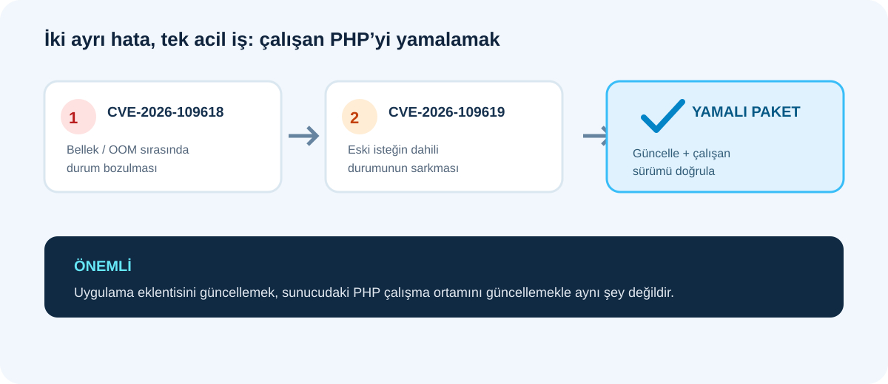
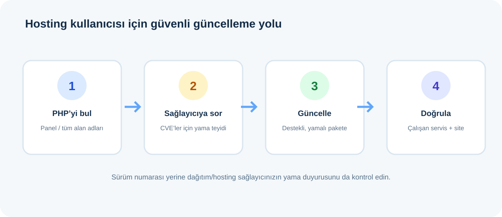
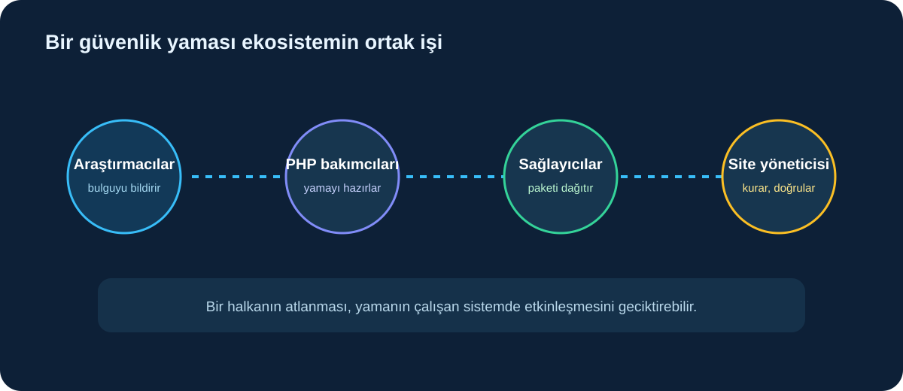
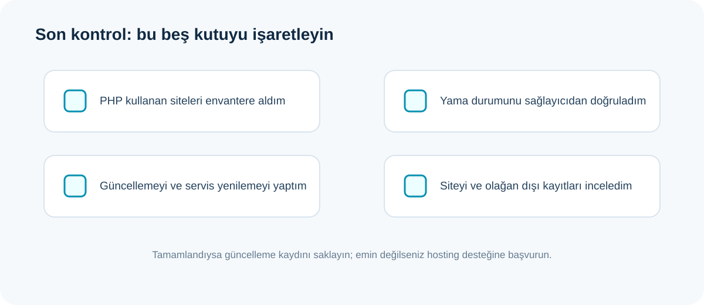

PHP ekibi 21 Ekim’de, bazı koşullarda kimlik doğrulaması gerektirmeden sunucuda kod çalıştırılmasına yol açabilen iki kritik açığı kapatan sürümleri yayımladı. PHP kullanan sunucular için güncelleme çağrısı açık. Bu rehberde güvenlik açığının ne anlama geldiğini, düzeltilmiş sürümleri ve WordPress ya da paylaşımlı hosting kullananların ne yapması gerektiğini sade biçimde anlatıyoruz.
Önce önemli ayrım: Bu, her WordPress sitesinin saldırıya uğradığı anlamına gelmiyor. Risk, sunucuda çalışan PHP kurulumunun hangi sürüm ve sağlayıcı paketini kullandığına bağlı. PHP projesi ile işletim sistemi dağıtımları yamaları yayımladı; barındırma sağlayıcınızın uyguladığı sürümü ayrıca doğrulamalısınız.

Hangi açıklar bulundu?
PHP’nin güvenlik duyurusu iki CVE numarası veriyor: CVE-2026-109618 bellek yetersizliği (OOM) sırasında iç istek verilerinin kısmen hazırlanmış kalmasıyla ilişkili. CVE-2026-109619 ise bir hata sonrasında eski bir isteğe ait dahili durumun sonraki isteğe sarkabilmesiyle ilgili. Teknik ayrıntıları saldırı tarifi olarak çoğaltmıyoruz; site sahibinin karar vermesi için önemli olan, her iki sorunun da bazı yapılandırmalarda uzaktan kod çalıştırma riski taşıması ve yamaların yayımlanmış olması.
PHP’nin resmî duyurusuna göre web isteği sunan PHP kurulumları kapsama girebilir: Apache mod_php, PHP-FPM, php-cgi, FrankenPHP ve LiteSpeed dahil. PHP ekibi mod_php için gösterilmiş saldırı koşullarını özellikle vurguluyor. Bu nedenle “uygulamamda PHP kodu yok” veya “WordPress eklentim güncel” demek tek başına sunucu PHP’sinin güncel olduğunu kanıtlamaz.
Hangi PHP sürümleri düzeltildi?
PHP projesi 21 Ekim 2026’da aşağıdaki sürümleri güvenlik düzeltmeleriyle duyurdu:
- PHP 8.5 kullananlar: 8.5.12
- PHP 8.4 kullananlar: 8.4.27
- PHP 8.3 kullananlar: 8.3.36
- PHP 8.2 kullananlar: 8.2.35
Bu liste PHP projesinin kendi indirme sürümleridir. Linux dağıtımları, uzun süreli destek sağlayıcıları veya hosting şirketleri aynı düzeltmeleri kendi paketlerine geriye taşıyabilir; sürüm numarası resmî listeyle birebir görünmeyebilir. Tersi de geçerli: yalnızca PHP dalının destekleniyor olması sunucunuzda yamanın kurulu olduğunu göstermez. Kurumunuzun dağıtım ve sağlayıcı duyurusunu esas alın.

WordPress veya paylaşımlı hosting kullanıyorsanız
Çoğu site sahibi PHP’yi kendisi derlemez; kontrol panelinde seçer veya hosting şirketi yönetir. Bu yüzden şu adımları izleyin:
- Panelden çalışan PHP sürümünü bulun. Hosting yönetim panelindeki PHP ayarları ya da site sağlık ekranı başlangıç noktasıdır. Birden fazla alan adınız veya alt alan adınız varsa her birini kontrol edin.
- Sağlayıcıya açıkça sorun. “CVE-2026-109618 ve CVE-2026-109619 için sunucumdaki PHP paketine düzeltme uygulandı mı, hangi paket/sürümle doğrulayabilirim?” diye yazın. İşletim sistemi tarafından geriye taşınmış (backport) yama varsa bunun kanıtını isteyin.
- Panelden güvenli güncellemeyi seçin. PHP dalını yalnızca resmî proje sürümleriyle sınırlı sanmayın; sağlayıcınızın desteklediği, yamalı sürüme geçin. Eski bir uygulama sürümüne yükseltme öncesi uyumluluk ve yedek durumunu kontrol edin.
- Çalışma süreçlerini yenileyin ve tekrar doğrulayın. Bazı ortamlarda PHP-FPM, web sunucusu ya da uygulama worker’larının yeniden başlatılması gerekir. Bunu hosting sağlayıcısının talimatına göre yapın; yalnızca dosyaların güncellenmesi çalışan işlemin de değiştiğini kanıtlamaz.
- Siteyi ve kayıtları gözden geçirin. Güncelleme sonrası giriş, form, ödeme ve kritik sayfaları deneyin; olağan dışı yönetici hesapları, dosyalar ve sunucu kayıtları için sağlayıcıdan yardım alın.
PHP sürüm bilgisini herkese açık bir phpinfo() sayfasıyla yayımlamayın; bu sayfa gereğinden fazla sunucu ayrıntısı gösterebilir. Kontrolü yönetim panelinden veya sağlayıcının güvenli araçlarından yapın. İnternetten indirilen rastgele “açık tarayıcı” araçlarının sonucunu da tek başına yama kanıtı kabul etmeyin.
Yapay zekâ bu açıkları mı buldu?
OpenAI’nin 21 Ekim tarihli duyurusu, Calif’in GPT-5.6 Sol kullanarak kritik bir PHP hatasını bulduğunu; Wiz’in de iki açığı bağımsız olarak bildirip araştırmaya katkı verdiğini söylüyor. Bu, OpenAI’nin kendi açıklamasıdır. PHP Foundation’ın yazısı ise güvenlik ekibinin, araştırmacıların ve farklı güvenlik kuruluşlarının raporlarıyla yürütülen daha geniş süreci anlatıyor. Düzeltmeleri PHP’nin bakımcıları yönetti ve yayımladı. Bu ayrım önemli: bir araştırma aracının bulguyu tespit etmesi, yazılımı güncel tutma sorumluluğunu ortadan kaldırmıyor.

TechWave okuyucuları için bu ne demek?
Bu yazının yayımlandığı TechWave sitesi GitHub Pages üzerinde sunulan statik HTML, CSS ve JavaScript dosyalarından oluşuyor; site içeriğini göstermek için kendi sunucusunda PHP çalıştırmıyor. Bu nedenle bu PHP yamaları TechWave’in statik yayın altyapısına uygulanacak bir güncelleme değildir. Ancak WordPress, PHP tabanlı bir mağaza, özel web uygulaması ya da PHP kullanan bir hosting hesabı işletiyorsanız kendi sağlayıcınızla kontrol etmeniz gerekir. Bir sitenin yalnızca ön yüzüne bakarak arka uç teknolojisi her zaman anlaşılmaz.
Kısa kontrol listesi

- PHP kullanan alan adları ve uygulamaları belirledim.
- Her sunucuda gerçek çalışan PHP sürümünü ve sağlayıcı paketini öğrendim.
- CVE-2026-109618 ve CVE-2026-109619 düzeltmelerinin kurulu olduğunu sağlayıcıdan doğruladım.
- Gerekliyse PHP-FPM/web sunucusu süreçlerini sağlayıcı talimatıyla yeniledim.
- Güncelleme sonrası uygulamayı ve olağan dışı etkinlikleri kontrol ettim.
Resmî duyuru, PHP 8.1 ve daha eski dalların PHP projesinden artık güncelleme almadığını belirtiyor; bazı dağıtımlar veya uzun süreli destek sağlayıcıları yamayı geriye taşıyabilir. Eski bir sürümdeyseniz “güncelleme yok” varsayımıyla beklemeyin: sağlayıcıdan backport durumunu öğrenin ve desteklenen bir PHP dalına geçiş planı yapın.
Sonuç
Bu haberin pratik sonucu basit: PHP çalıştırıyorsanız web uygulaması eklentilerinin güncelliği kadar sunucu çalışma ortamının da yama alması gerekiyor. PHP’nin resmî sürüm duyurusunu ve hosting/işletim sistemi sağlayıcınızın talimatını birlikte izleyin. Sürüm tespiti tek başına koruma değildir; güncellenmiş paketin çalışan web süreçlerinde etkin olduğunu doğrulayın.
Bu rehber 22 Ekim 2026 itibarıyla yayımlanan PHP, PHP Foundation, ENISA ve OpenAI açıklamalarına dayanır. Güvenlik adımları sisteminize göre değişebileceğinden sağlayıcınızın duyurusunu esas alın.
Kaynaklar
- PHP.net: Kritik güvenlik duyurusu ve düzeltilmiş sürümler (21 Ekim 2026)
- PHP Foundation: Güvenlik sürümü ve düzeltme süreci (21 Ekim 2026)
- ENISA ve AB siber güvenlik kurumları: PHP açıkları için ortak uyarı (21 Ekim 2026)
- OpenAI: Patch the Planet koordineli açıklama süreci (21 Ekim 2026)
İlgili yazı: Yapay zekâ güvenliği ve siber denetimler üzerine analizimiz.